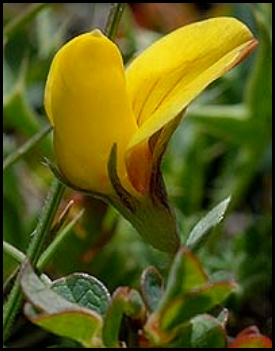

INICIO
- ¿Quienes somos? -
Documentos
Correo Electrónico
-
Enlaces
-
Suscripción a Novedades
Las amenazas
Desolación
Figuras de Protección
Parque Natural
RN 2000
Reserva de la biosfera
Flora y Fauna
¿Quiénes somos?
Presentación
Actividades
Documentos
Noticias
Legislación
Enlaces
Documentos
NOTAS DE PRENSA
ESCRITOS
DOCUMENTOS
Artículos científicos
LA COVATILLA EN EUROPA

Notas de prensa
El Procurador del Común insta a la Junta de Castilla y León a agilizar el PORN del PN de Candelario
(09/10/2008)
El desarrollo económico de Candelario será compatible con la protección del medioambiente o, simplemente, no será
(19/09/2008)
Ceremonia de la confusión ante la DIA de la Covatilla: ¿Campaña preelectoral?
(Comunicado de prensa de la Plataforma) (21/12/2007)
Comunicado de prensa de La Plataforma
(19/12/2007)
El Impacto económico del esquí: hasta ahora, sólo propaganda (20/11/2007)
La ampliación: ni moderada, ni sostenible, ni respetuosa
. (12/11/2007)
Comunicado de prensa de la plataforma
(25/09/2007)
La mayoria de los alcaldes de la zona favorables a la declaración del Parque Natural de Candelario
Nota de prensa sobre les efectos económicos de la estación de esquí. (28/06/2007)
Efectos “colaterales” de la Covatilla, o la destrucción de un trampal
(Junio 2007)
Artículo de la Plataforma para el periódico "La Voz de las Sierras"
El Ministerio de Medio Ambiente recuerda a la Junta las obligaciones de evitar el deterioro de los espacios pertenecientes a la Red Natura 2000
(24 de Abril de 2007)
Campaña contra la recogida masiva de narcisos
(10 de Abril 2007)
Comunicado contra la nueva paralización del PORN
(Marzo 2007)
Comunicado a favor de la libertad de expresión
. (13 de Diciembre 2006). Ante las presiones y amenazas de cierre que esta sufriendo la emisora Béjar-FM
Carta abierta al Ayuntamiento de Candelario
(30 de Noviembre de 2006). Con motivo del deterioro de la Convivencia y de los boicots a personas que defienden el Parque Natural.
Escritos
Manifiesto contra la ampliación de La Covatilla, leido en la Marcha reivindicativa a La Cardosa
(6/05/2007)
Escrito enviado al Consejero de Medio Ambiente e integrantes de la Ponencia Técnica Regional
, sobre las irregularidades cometidas en la ampliación de "La Covatilla" y los perjuicios que provoca en el Espacio natural de Candelario (2 de Abril de 2007)
Escrito a la Sra. Ministra de Medio Ambiente Cristina Narbona.
El objetivo era trasladarle nuestra preocupación por las obras de ampliación de la estación de esquí que afectaran al término municipal de candelario. (Noviembre)
(Contestación del Ministerio)
Documentos
2º Escrito del Procurador del común después de haber recibido la respuesta de la Junta